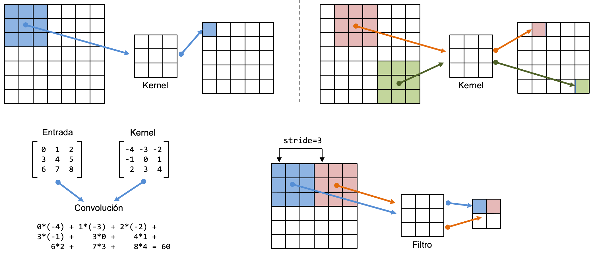
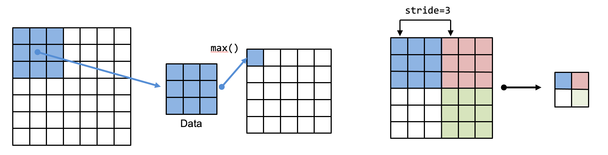

Carga y preprocesamiento de imágenes — 16:54 min
Última modificación: Mayo 5, 2022 | YouTube
Importación de librerías
[1]:
import os
os.environ["TF_CPP_MIN_LOG_LEVEL"] = "2"
import tensorflow as tf
Descarga de archivos de ejemplo de TensorFlow
[2]:
dataset_url = "https://storage.googleapis.com/download.tensorflow.org/example_images/flower_photos.tgz"
data_dir = tf.keras.utils.get_file(
# -----------------------------------------------------------------------------------
# Ubicacion donde seran guardados los archivos
fname="flower_photos",
# -----------------------------------------------------------------------------------
# Direccion web de los archivos
origin=dataset_url,
# -----------------------------------------------------------------------------------
# Extracción de archivos tar, zip, ...
untar=True,
# -----------------------------------------------------------------------------------
# Directorio para almacenamiento de los datos
cache_subdir="/tmp/",
)
data_dir
[2]:
'/tmp/flower_photos'
[3]:
import pathlib
#
# Crea un objeto para manipular los archivos
#
data_dir = pathlib.Path(data_dir)
data_dir
[3]:
PosixPath('/tmp/flower_photos')
Contenido de la carpeta de ejemplos
[4]:
#
# Directorios
#
!ls -1 /tmp/flower_photos/
LICENSE.txt
daisy
dandelion
roses
sunflowers
tulips
[5]:
#
# Cantidad de archivos
#
len(list(data_dir.glob("*/*.jpg")))
[5]:
3670
Carga directa de los datos desde el directorio usando Keras
[6]:
#
# Parámetros
#
params = {
"directory": data_dir,
"validation_split": 0.2,
"seed": 12345,
"image_size": (180, 180),
"batch_size": 32,
}
train_params = {**params, **{"subset": "training"}}
val_params = {**params, **{"subset": "validation"}}
[7]:
#
# Datos para entrenamiento
#
train_ds = tf.keras.utils.image_dataset_from_directory(**train_params)
Found 3670 files belonging to 5 classes.
Using 2936 files for training.
[8]:
#
# Datos para validación
#
val_ds = tf.keras.utils.image_dataset_from_directory(**val_params)
Found 3670 files belonging to 5 classes.
Using 734 files for validation.
[9]:
#
# Nombres de las clases
#
class_names = train_ds.class_names
class_names
[9]:
['daisy', 'dandelion', 'roses', 'sunflowers', 'tulips']
Visualización de los datos
[10]:
import matplotlib.pyplot as plt
plt.figure(figsize=(10, 8))
for images, labels in train_ds.take(1):
for i in range(12):
ax = plt.subplot(3, 4, i + 1)
plt.imshow(images[i].numpy().astype("uint8"))
plt.title(class_names[labels[i]])
plt.axis("off")

Preprocesamiento de los datos
[11]:
#
# Creación de una capa de re-escalado
#
rescaling_layer = tf.keras.layers.Rescaling(1.0 / 255)
#
# Aplica la función a cada imagen del dataset
#
rescaled_ds = train_ds.map(lambda x, y: (rescaling_layer(x), y))
#
# Se debe interar sobre cada batch
#
image_batch, labels_batch = next(iter(rescaled_ds))
Configuración del dataset para el desempeño
[12]:
AUTOTUNE = tf.data.AUTOTUNE
#
# cache: mantiene las images en memoria despues de la primera lectura
# prefetch: traslapa la lectura del bloque s+1 con el entrenamiento del bloque s.
# Ver: https://www.tensorflow.org/guide/data_performance#prefetching
#
train_ds = train_ds.cache().prefetch(buffer_size=AUTOTUNE)
val_ds = val_ds.cache().prefetch(buffer_size=AUTOTUNE)
Creación del modelo usando Sequential
[13]:
num_classes = 5
model = tf.keras.Sequential(
[
tf.keras.layers.Rescaling(1.0 / 255),
#
tf.keras.layers.Conv2D(32, 3, activation="relu"),
tf.keras.layers.MaxPooling2D(),
#
tf.keras.layers.Conv2D(32, 3, activation="relu"),
tf.keras.layers.MaxPooling2D(),
#
tf.keras.layers.Conv2D(32, 3, activation="relu"),
tf.keras.layers.MaxPooling2D(),
#
tf.keras.layers.Flatten(),
tf.keras.layers.Dense(128, activation="relu"),
tf.keras.layers.Dense(num_classes),
]
)
Capa Conv2D

Capa MaxPooling2D

Compilación y entrenamiento del modelo
[14]:
model.compile(
optimizer="adam",
loss=tf.losses.SparseCategoricalCrossentropy(from_logits=True),
metrics=["accuracy"],
)
history = model.fit(
train_ds,
validation_data=val_ds,
epochs=3,
)
Epoch 1/3
92/92 [==============================] - 38s 404ms/step - loss: 1.3439 - accuracy: 0.4097 - val_loss: 1.1973 - val_accuracy: 0.5054
Epoch 2/3
92/92 [==============================] - 35s 372ms/step - loss: 1.0475 - accuracy: 0.5804 - val_loss: 1.1008 - val_accuracy: 0.5477
Epoch 3/3
92/92 [==============================] - 35s 379ms/step - loss: 0.8896 - accuracy: 0.6529 - val_loss: 1.0235 - val_accuracy: 0.6104
[14]:
<keras.callbacks.History at 0x7f310831fd30>
Nota. El objetivo de esta lección es ejemplificar la carga de imágenes desde un directorio, por lo que no se analizará el modelo.